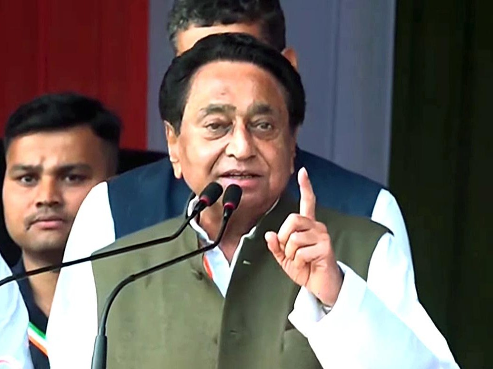

राष्ट्र सेवा के पाँच दशक
आरंभ
कमल नाथ की राजनीतिक यात्रा का आरंभ 1960 के दशक के अंत और 1970 के दशक की शुरुआत में भारतीय युवा कांग्रेस के माध्यम से हुआ। एक ऐसे समय में जब देश स्वतंत्रता के बाद के दो दशकों में नई चुनौतियों और संभावनाओं से जूझ रहा था, युवा कमल नाथ ने राजनीति में अपने कदम रखे। युवा कांग्रेस उस दौर में देश के भावी नेताओं की पाठशाला थी, जहाँ संगठनात्मक कौशल, जनसंपर्क और राजनीतिक रणनीति की बारीकियाँ सीखी जाती थीं। कमल नाथ ने इस मंच का पूरा लाभ उठाया और अपनी संगठनात्मक क्षमताओं, जनसंपर्क कौशल और अदम्य ऊर्जा से शीघ्र ही पार्टी के वरिष्ठ नेतृत्व का ध्यान आकर्षित किया।
कमल नाथ का राजनीतिक दर्शन शुरू से ही जमीनी स्तर के कार्य पर केंद्रित रहा। उन्होंने गाँव-गाँव, कस्बे-कस्बे जाकर पार्टी संगठन का निर्माण किया, स्थानीय नेताओं से संवाद किया और आम जनता की समस्याओं को करीब से समझा। यह अनुभव उनके भविष्य के राजनीतिक जीवन की नींव बना। जहाँ कई नेता दिल्ली के गलियारों में ही राजनीति करते थे, वहीं कमल नाथ ने ग्रामीण भारत की वास्तविकताओं को अपनी राजनीतिक समझ का आधार बनाया। इस जमीनी अनुभव ने उन्हें एक ऐसा नेता बनाया जो आम आदमी की भाषा बोल सकता था और उनकी आकांक्षाओं को नीतियों में परिवर्तित कर सकता था।
1970 के दशक में कमल नाथ का संजय गांधी के साथ घनिष्ठ संबंध बना, जो उनकी राजनीतिक यात्रा का एक महत्वपूर्ण मोड़ साबित हुआ। संजय गांधी उस समय युवा कांग्रेस के माध्यम से देश भर में एक नई राजनीतिक पीढ़ी तैयार कर रहे थे, और कमल नाथ उनके सबसे विश्वसनीय सहयोगियों में से एक बन गए। यह साझेदारी न केवल व्यक्तिगत मित्रता पर आधारित थी, बल्कि देश के विकास और युवा शक्ति को राजनीति में सक्रिय भागीदारी देने के साझा विज़न पर भी टिकी थी। नेहरू-गांधी परिवार से इस निकटता ने कमल नाथ को राष्ट्रीय राजनीति के केंद्र में ला खड़ा किया।
आपातकाल का काल भारतीय लोकतंत्र के इतिहास में एक अत्यंत विवादास्पद और परिवर्तनकारी अध्याय रहा। इस कठिन दौर में कमल नाथ ने कांग्रेस पार्टी के साथ अपनी प्रतिबद्धता बनाए रखी। आपातकाल और उसके बाद के वर्षों ने उनकी राजनीतिक समझ को गहराई से प्रभावित किया। उन्होंने लोकतंत्र, शक्ति और राजनीतिक जिम्मेदारी के बीच के नाजुक संतुलन को करीब से देखा और अनुभव किया। आपातकाल के बाद जब कांग्रेस पार्टी ने इंदिरा गांधी के नेतृत्व में पुनर्गठन किया, तब कमल नाथ ने पार्टी की संगठनात्मक मशीनरी में और अधिक महत्वपूर्ण भूमिका निभाई। जटिल राजनीतिक परिस्थितियों को सुलझाने, गुटों के बीच मध्यस्थता करने और ज़मीनी स्तर पर परिणाम देने की उनकी क्षमता ने उन्हें "संकट प्रबंधक" की प्रतिष्ठा दिलाई।
राजनीति केवल सत्ता का खेल नहीं है, यह जनसेवा का माध्यम है। सच्चा नेता वह है जो जनता की आवाज़ बने और उनके सपनों को साकार करे।
— कमल नाथ
संसद में
छिंदवाड़ा से लगातार नौ बार लोकसभा में निर्वाचन — भारतीय संसदीय इतिहास में एक अद्वितीय उपलब्धि
कैबिनेट
भारत सरकार के तीन महत्वपूर्ण मंत्रालयों में उत्कृष्ट नेतृत्व
वाणिज्य और उद्योग मंत्री के रूप में कमल नाथ ने भारत की व्यापार नीति को पूर्णतया नया स्वरूप दिया। उन्होंने विश्व व्यापार संगठन (WTO) की वार्ताओं में भारत का प्रतिनिधित्व करते हुए विकासशील देशों के हितों की ज़ोरदार वकालत की। उनके कार्यकाल में भारत का निर्यात दोगुना हुआ और देश की अंतर्राष्ट्रीय व्यापार में स्थिति मज़बूत हुई। उन्होंने विशेष आर्थिक क्षेत्रों (SEZ) की नीति को लागू किया, जिससे देश में औद्योगिक विकास और रोजगार सृजन को गति मिली। कृषि सब्सिडी के मुद्दे पर उनकी दृढ़ स्थिति ने भारतीय किसानों के हितों की रक्षा की।
शहरी विकास मंत्री के रूप में कमल नाथ ने भारत के शहरीकरण को एक नई दिशा दी। जवाहरलाल नेहरू राष्ट्रीय शहरी नवीकरण मिशन (JNNURM) के तहत उन्होंने देश भर के शहरों में बुनियादी ढाँचे के आधुनिकीकरण का नेतृत्व किया। दिल्ली मेट्रो के विस्तार और अन्य शहरों में मेट्रो परियोजनाओं की शुरुआत उनकी दूरदर्शिता का परिणाम थी। जल आपूर्ति, सीवरेज प्रणाली, शहरी परिवहन और गरीबों के लिए आवास जैसे महत्वपूर्ण क्षेत्रों में उन्होंने ठोस पहल की। उनकी योजनाओं ने भारत के शहरों को विश्वस्तरीय बनाने की दिशा में महत्वपूर्ण कदम उठाए।
संसदीय कार्य मंत्री के रूप में कमल नाथ ने सरकार और संसद के बीच सेतु का कार्य किया। इस अत्यंत संवेदनशील और जटिल भूमिका में उन्होंने विधायी समन्वय, सत्र प्रबंधन और विपक्ष के साथ संवाद की जिम्मेदारी बखूबी निभाई। गठबंधन राजनीति के इस कठिन दौर में उन्होंने अनेक महत्वपूर्ण विधेयकों को संसद में पारित कराने में निर्णायक भूमिका निभाई। उनकी कूटनीतिक कुशलता, विपक्षी नेताओं के साथ व्यक्तिगत संबंधों और संसदीय प्रक्रियाओं की गहरी समझ ने इस कार्यकाल को अत्यंत प्रभावी बनाया।
वैश्विक मंच
2003 में मेक्सिको के कैनकन में आयोजित WTO मंत्रिस्तरीय सम्मेलन में कमल नाथ ने विकासशील देशों के गठबंधन का नेतृत्व किया और अंतर्राष्ट्रीय व्यापार वार्ता के इतिहास में एक नया अध्याय लिखा। विकसित देशों द्वारा अपने किसानों को दी जाने वाली भारी सब्सिडी के विरुद्ध उन्होंने मज़बूत स्थिति अपनाई और G-20 विकासशील देशों के समूह को एकजुट किया। कैनकन ने दुनिया को दिखाया कि विकासशील देश अब अनुचित व्यापार शर्तों को स्वीकार करने के लिए तैयार नहीं हैं। कमल नाथ की इस भूमिका ने उन्हें "विकासशील दुनिया की आवाज़" के रूप में अंतर्राष्ट्रीय मान्यता दिलाई।
दोहा विकास दौर की बहुपक्षीय व्यापार वार्ताओं में कमल नाथ ने भारत के मुख्य वार्ताकार के रूप में अत्यंत महत्वपूर्ण भूमिका निभाई। कृषि सब्सिडी, बाज़ार पहुँच, सेवा व्यापार और बौद्धिक संपदा अधिकार जैसे जटिल मुद्दों पर उन्होंने भारत और अन्य विकासशील देशों के हितों की दृढ़ता से रक्षा की। 2008 के जिनेवा मंत्रिस्तरीय सम्मेलन में उनकी अडिग स्थिति ने वैश्विक ध्यान आकर्षित किया, जहाँ उन्होंने भारतीय किसानों के हितों से समझौता करने से स्पष्ट इनकार कर दिया। इस निर्णय ने उन्हें अंतर्राष्ट्रीय व्यापार के क्षेत्र में एक विश्वसनीय और दृढ़ वार्ताकार के रूप में स्थापित किया।
कमल नाथ की WTO वार्ताओं में सबसे प्रमुख प्राथमिकता भारतीय किसानों के हितों की रक्षा रही। जब विकसित देश भारत पर अपने कृषि बाज़ारों को पूरी तरह खोलने का दबाव डाल रहे थे, तब कमल नाथ ने विशेष सुरक्षा उपाय (Special Safeguard Mechanism) की माँग को बल दिया। उनका तर्क था कि भारत जैसे देश में, जहाँ करोड़ों लोगों की जीविका कृषि पर निर्भर है, अंतर्राष्ट्रीय प्रतिस्पर्धा से किसानों को बचाना सरकार का नैतिक दायित्व है। उनकी दृढ़ स्थिति ने भारतीय कृषि को अनुचित अंतर्राष्ट्रीय प्रतिस्पर्धा से सुरक्षित रखा।
वाणिज्य मंत्री के रूप में कमल नाथ ने भारत की व्यापार नीति को रणनीतिक दृष्टि से पुनर्गठित किया। उन्होंने द्विपक्षीय और क्षेत्रीय व्यापार समझौतों को बढ़ावा दिया, निर्यात विविधीकरण की नीति अपनाई और भारतीय उद्योग को वैश्विक प्रतिस्पर्धा के लिए तैयार किया। सूचना प्रौद्योगिकी, फार्मास्युटिकल और सेवा क्षेत्र में भारत की वैश्विक प्रतिस्पर्धात्मक बढ़त को मज़बूत करने में उनकी नीतियों ने महत्वपूर्ण भूमिका निभाई। उनकी व्यापार कूटनीति का मूल सिद्धांत था — वैश्वीकरण का लाभ सभी तक पहुँचे, न कि केवल कुछ विशेषाधिकार प्राप्त देशों और वर्गों तक।
अंतर्राष्ट्रीय व्यापार का अर्थ यह नहीं है कि शक्तिशाली देश कमज़ोर देशों पर अपनी शर्तें थोपें। व्यापार तभी न्यायसंगत है जब वह सभी राष्ट्रों के नागरिकों, विशेषकर किसानों और मज़दूरों, के जीवन को बेहतर बनाए।
— कमल नाथ
राज्य नेतृत्व
15 वर्षों के भाजपा शासन को समाप्त कर ऐतिहासिक जीत — दिसम्बर 2018 से मार्च 2020
दिसम्बर 2018 में कमल नाथ ने मध्य प्रदेश विधानसभा चुनावों में कांग्रेस को ऐतिहासिक जीत दिलाई और 15 वर्षों के भाजपा शासन को समाप्त किया। यह जीत कमल नाथ की संगठनात्मक कुशलता, रणनीतिक दूरदर्शिता और जनता से जुड़ने की असाधारण क्षमता का परिणाम थी। चुनावी अभियान के दौरान उन्होंने राज्य के कोने-कोने का दौरा किया, किसानों, युवाओं और हाशिए पर खड़े समुदायों की समस्याओं को सुना और उनके समाधान का संकल्प लिया। मुख्यमंत्री के रूप में शपथ लेने के साथ ही उन्होंने जनता से किए गए वादों को पूरा करने का अभियान शुरू कर दिया।
मुख्यमंत्री बनने के तुरंत बाद कमल नाथ ने "जय किसान फसल ऋण माफी योजना" की घोषणा की, जो भारत की सबसे बड़ी कृषि ऋण माफी योजनाओं में से एक थी। इस योजना के तहत लाखों किसानों का ऋण माफ किया गया, जिससे कर्ज़ के बोझ तले दबे किसान परिवारों को तत्काल राहत मिली। यह निर्णय किसानों के प्रति कमल नाथ की गहरी प्रतिबद्धता और उनकी संवेदनशीलता का प्रतीक था। योजना ने न केवल किसानों की आर्थिक स्थिति सुधारी, बल्कि ग्रामीण अर्थव्यवस्था में नई जान फूँकी।
मुख्यमंत्री के रूप में कमल नाथ ने मध्य प्रदेश में बुनियादी ढाँचे के विकास को सर्वोच्च प्राथमिकता दी। सड़क निर्माण, विद्युतीकरण, जल आपूर्ति, शहरी परिवहन और डिजिटल संपर्क के क्षेत्र में उन्होंने महत्वाकांक्षी परियोजनाएँ शुरू कीं। ग्रामीण क्षेत्रों में सड़क संपर्क बढ़ाने, शहरों में स्मार्ट सिटी योजनाओं को गति देने और औद्योगिक गलियारों के विकास पर विशेष ज़ोर दिया गया। उनका उद्देश्य मध्य प्रदेश को भारत के सबसे विकसित राज्यों की पंक्ति में खड़ा करना था।
कमल नाथ ने मुख्यमंत्री के रूप में अनेक सामाजिक कल्याण कार्यक्रमों की शुरुआत की जो समाज के सबसे कमज़ोर वर्गों को लक्षित करते थे। अनुसूचित जाति, अनुसूचित जनजाति और अन्य पिछड़ा वर्ग के उत्थान के लिए विशेष योजनाएँ बनाई गईं। महिला सशक्तिकरण, बाल विकास, वरिष्ठ नागरिकों की देखभाल और दिव्यांगजनों के कल्याण पर विशेष ध्यान दिया गया। शिक्षा और स्वास्थ्य सेवाओं को ज़मीनी स्तर तक पहुँचाने के लिए नवीन पहलों को लागू किया गया।
मध्य प्रदेश कांग्रेस कमेटी अध्यक्ष — राज्य स्तर पर पार्टी संगठन का पुनर्निर्माण और मज़बूती
AICC महासचिव — अखिल भारतीय कांग्रेस कमेटी में राष्ट्रीय स्तर पर संगठनात्मक नेतृत्व
रणनीतिकार और संकट प्रबंधक — कांग्रेस पार्टी के सबसे विश्वसनीय समस्या निवारक और चुनावी रणनीतिकार
चुनावी अभियान प्रबंधक — अनेक राज्यों में कांग्रेस के चुनावी अभियानों का सफल संचालन
पार्टी संगठन
मध्य प्रदेश कांग्रेस कमेटी के अध्यक्ष के रूप में कमल नाथ ने राज्य में पार्टी संगठन को नई ऊर्जा और दिशा प्रदान की। उन्होंने ब्लॉक स्तर से लेकर राज्य स्तर तक संगठन को पुनर्जीवित किया, नई प्रतिभाओं को अवसर दिए और कार्यकर्ताओं में नया उत्साह भरा। उनके नेतृत्व में पार्टी ने मध्य प्रदेश में अपना जनाधार व्यापक बनाया और विभिन्न सामाजिक समूहों तक अपनी पहुँच बढ़ाई। संगठनात्मक चुनावों का सुचारू संचालन, कार्यकर्ता सम्मेलनों का आयोजन और जन संवाद कार्यक्रमों के माध्यम से उन्होंने पार्टी को जनता से जोड़ा।
अखिल भारतीय कांग्रेस कमेटी (AICC) के महासचिव के रूप में कमल नाथ ने राष्ट्रीय स्तर पर पार्टी की संगठनात्मक रणनीति में निर्णायक भूमिका निभाई। विभिन्न राज्यों में चुनावी तैयारियों, उम्मीदवारों के चयन, गठबंधन वार्ताओं और चुनावी अभियानों के प्रबंधन में उनका मार्गदर्शन अमूल्य रहा। उन्हें अक्सर उन राज्यों में भेजा जाता था जहाँ पार्टी को सबसे कठिन चुनौतियों का सामना करना पड़ता था। उनकी समस्याओं को सुलझाने, गुटबाजी को नियंत्रित करने और एकजुटता बनाने की क्षमता ने उन्हें कांग्रेस पार्टी का सबसे भरोसेमंद "संकट प्रबंधक" बना दिया।
कांग्रेस पार्टी के भीतर कमल नाथ को जिस भूमिका में सबसे अधिक सम्मान मिला, वह है पार्टी के प्रमुख रणनीतिकार और संकट प्रबंधक की। जब भी पार्टी किसी राज्य में आंतरिक कलह, गठबंधन की समस्याओं या चुनावी चुनौतियों से जूझती, कमल नाथ को बुलाया जाता था। उनकी राजनीतिक बुद्धिमत्ता, व्यापक अनुभव और विभिन्न राजनीतिक दलों के नेताओं के साथ व्यक्तिगत संबंधों ने उन्हें सबसे जटिल राजनीतिक पहेलियों को भी सुलझाने में सक्षम बनाया। यह उनकी इस क्षमता का प्रमाण है कि दशकों से कांग्रेस नेतृत्व ने हर कठिन परिस्थिति में उन पर विश्वास किया।
आगे की राह
पाँच दशकों से अधिक के राजनीतिक अनुभव के साथ कमल नाथ आज भी भारतीय राजनीति में एक अत्यंत प्रभावशाली और सम्मानित शख्सियत हैं। कांग्रेस पार्टी में वे वरिष्ठतम नेताओं में से एक हैं, जिनकी सलाह और मार्गदर्शन हर महत्वपूर्ण निर्णय में लिया जाता है। उनका विशाल अनुभव — जो संसदीय कार्य, केंद्रीय मंत्रालय, राज्य शासन, अंतर्राष्ट्रीय वार्ता और संगठनात्मक प्रबंधन सभी क्षेत्रों में फैला है — उन्हें भारतीय राजनीति की जीवंत संस्था बनाता है। आज भी वे पार्टी की नीतियों, रणनीतियों और जनसंपर्क अभियानों में सक्रिय योगदान देते हैं।
कमल नाथ की वर्तमान भूमिका का एक महत्वपूर्ण पहलू है युवा पीढ़ी के राजनेताओं का मार्गदर्शन और प्रशिक्षण। उनका मानना है कि भारतीय लोकतंत्र का भविष्य इस बात पर निर्भर करता है कि अगली पीढ़ी के नेता कितने सक्षम, संवेदनशील और दूरदर्शी होंगे। वे युवा नेताओं को न केवल राजनीतिक रणनीति सिखाते हैं, बल्कि जनसेवा के मूल्यों, संगठनात्मक अनुशासन और जमीनी स्तर पर काम करने के महत्व पर भी बल देते हैं। उनका अपना पुत्र नकुल नाथ छिंदवाड़ा से सांसद के रूप में परिवार की सेवा परंपरा को आगे बढ़ा रहा है।
कमल नाथ की राजनीतिक विरासत केवल पदों और उपलब्धियों की सूची नहीं है। यह एक ऐसे नेता की कहानी है जिसने पाँच दशकों से अधिक समय तक अपने आदर्शों, अपनी जनता और अपने देश के प्रति अटूट प्रतिबद्धता बनाए रखी। छिंदवाड़ा से लेकर दिल्ली तक, और दिल्ली से लेकर जिनेवा और कैनकन के अंतर्राष्ट्रीय मंचों तक — उनकी यात्रा भारतीय लोकतंत्र की शक्ति और संभावनाओं का प्रतीक है। उनका जीवन यह संदेश देता है कि सच्ची राजनीति जनसेवा है, और सच्चा नेतृत्व वह है जो लोगों के जीवन में ठोस, सकारात्मक परिवर्तन लाए।
मेरी राजनीतिक यात्रा का हर कदम जनसेवा के संकल्प से प्रेरित रहा है। चाहे संसद हो या मुख्यमंत्री का कार्यालय, चाहे WTO की वार्ता हो या छिंदवाड़ा के गाँव — मेरा उद्देश्य हमेशा एक ही रहा है: आम भारतीय के जीवन को बेहतर बनाना।
— कमल नाथ